Torres del Paine (O Circuit)
The full 130 km Paine Circuit — wild back country, ice field, towers.
Torres del Paine (O Circuit) crosses Chile for 130 km and ends at Base of the Towers. The first landmark is Laguna Amarga. At 5,000 steps a day it's about 5 weeks of the walking you do anyway. All 17 landmarks are below, in walking order, with a photograph and the story of the place.
- 130km end to end
- 17landmarks
- 5 weeksat 5,000 steps a day
- Base of the Towersfinishes at

The landmarks of Torres del Paine (O Circuit)
17 landmarks, in walking order. Each photograph is by the person credited beneath it, used as they licensed it.
-
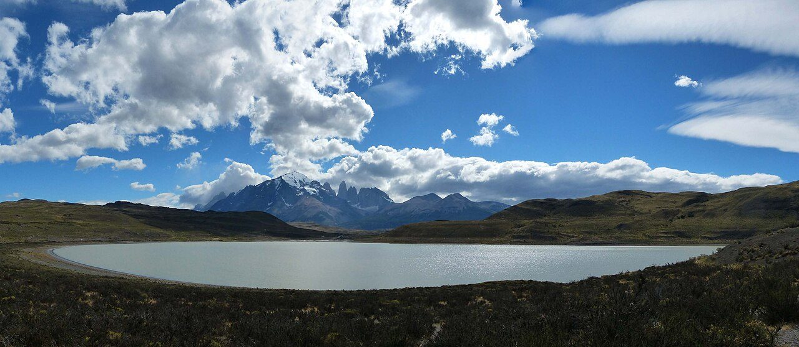
Photo: Kognos · Wikimedia Commons, CC BY-SA 4.0 Laguna Amarga
Guanacos graze the yellow pampas where the road ends at Laguna Amarga, the eastern gate of Torres del Paine. The anticlockwise O circuit, the harder and quieter way round the Paine massif and the only direction the rangers permit, runs roughly 130 kilometres. The towers hide somewhere ahead, saved for the final dawn, while wind combs the grass flat across the plain.
-
Refugio Serón
Rolling estancia country opens out along the Río Paine — low hills, beech copses, old cattle ground. Refugio Serón sits in a green fold of the valley, the first night's rest on the back side of the massif. Few walkers come this way compared with the W, and the silence shows it. Horses graze near the fence line. Weather here turns by the hour.
-
Mirador Lago Paine
The trail climbs a bluff and the valley swings west, revealing Lago Paine laid out steel-grey below. To the north the ground ripples toward the Argentine border, empty to the horizon. This high traverse is the windiest stretch of the day, gusts hard enough to halt a walker mid-stride. Beyond, the route bends down toward the hanging ice of the Dickson valley.
-
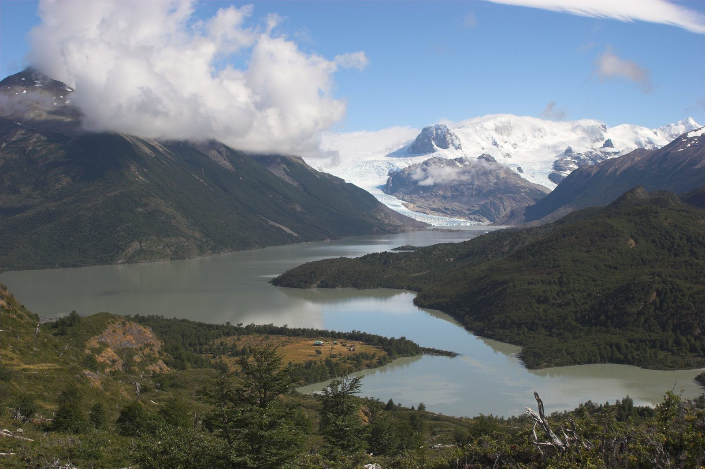
Photo: John Spooner · Wikipedia, CC BY 2.0 Lago Dickson
Around a shoulder of hill the Lago Dickson appears all at once — pale glacial blue, bergs adrift near its head, the Glaciar Dickson spilling off the ice field at the far shore. Refugio Dickson stands on a green spit almost ringed by water and mountains. It feels like the end of the world here, and very nearly is. Cloud sits low on the ice.
-
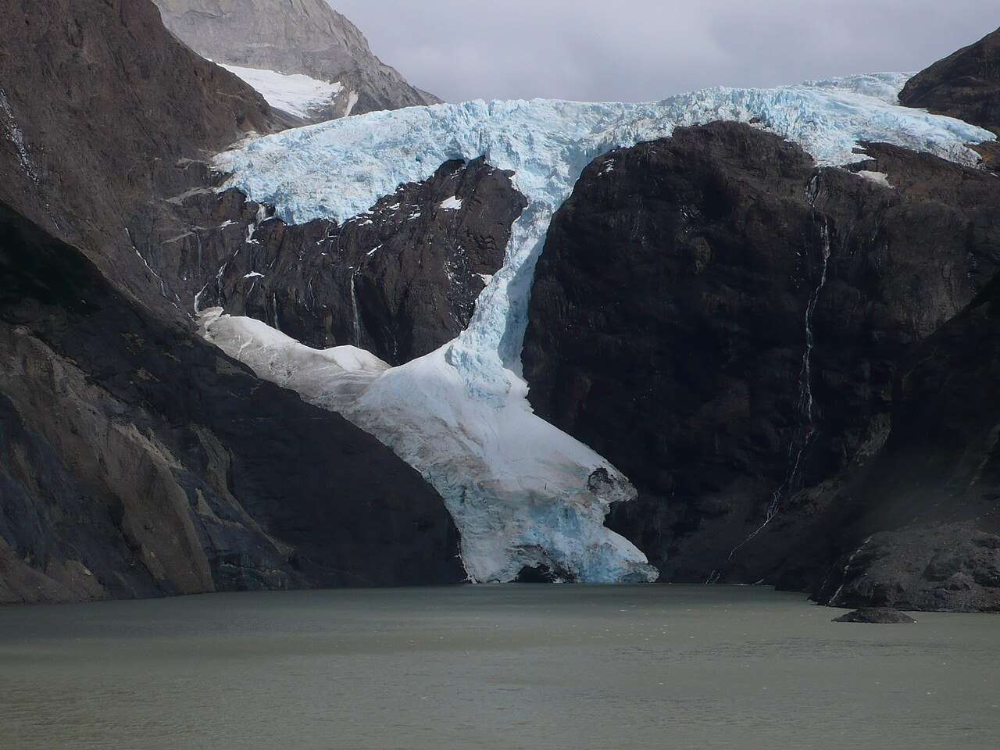
Photo: John Spooner · Wikimedia Commons, CC BY 2.0 Campamento Los Perros
Climbing through tangled lenga and bog, the path reaches Campamento Los Perros beneath its namesake glacier. A grey laguna, milky with rock-flour, catches lumps of ice calved from the Glaciar Los Perros above. This is the last shelter before the pass. Tents crowd the trees, and everyone eyes the sky — the crossing goes only in fair weather. Rain drums the canopy through the night.
-
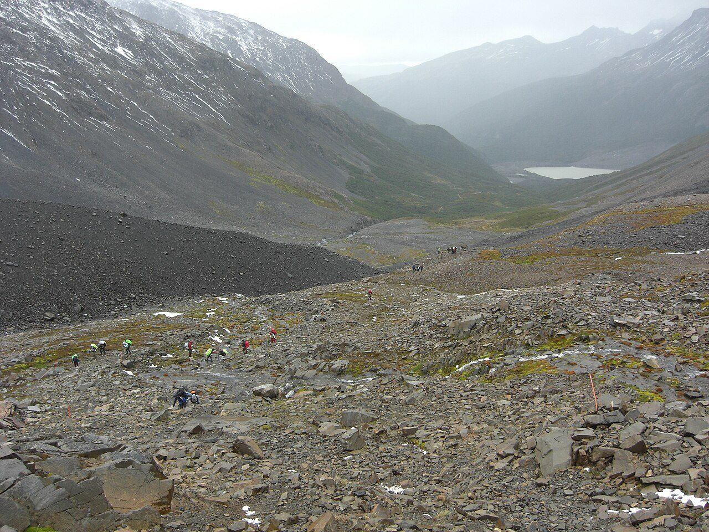
Photo: Jason Hollinger · Wikimedia Commons, CC BY 2.0 Paso John Garner
Above the treeline the mud turns to scree, then snow, and the wind arrives with nothing left to break it. Paso John Garner, around 1,200 metres, is the highest point and the crux of the whole circuit. Then the ground drops away — and there it is: the Southern Patagonian Ice Field, an ocean of ice reaching beyond sight. Few first views on earth match it.
-
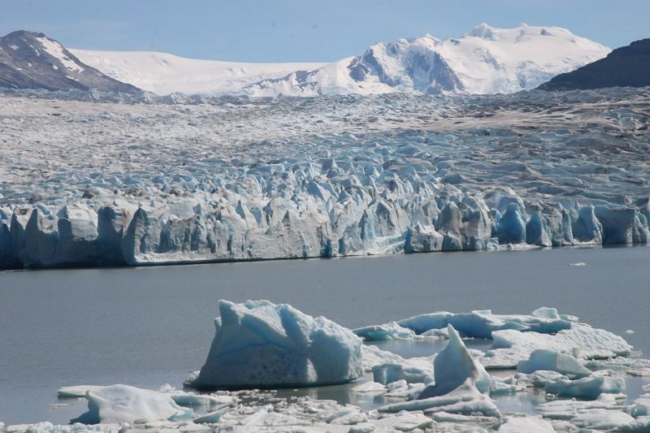
Photo: welsh boy from London, U.K. · Wikipedia, CC BY-SA 2.0 Grey Glacier
The descent off the pass is brutally steep, ropes and ladders bolted to the worst of it, with the Grey Glacier filling the view the whole way down. Roughly six kilometres of cracked ice pour off the field into Lago Grey, deep blue where the séracs have split fresh. Icebergs drift across the milky water below the trail.
-
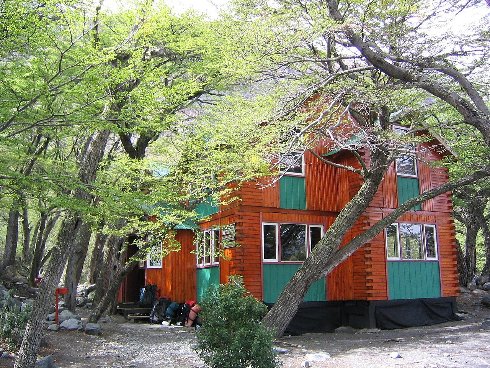
Photo: Phil Whitehouse from London, United Kingdom · Wikimedia Commons, CC BY 2.0 Refugio Grey
Lower now, in wind-stunted forest above the lake, three suspension bridges swing over meltwater gorges, their planks bouncing underfoot above the drop. Refugio Grey waits beyond, woodsmoke and a chance to dry wet boots. Here circuit walkers rejoin the W and its crowds, though the glacier's cold breath still reaches the deck. The wild half of the loop lies behind.
-
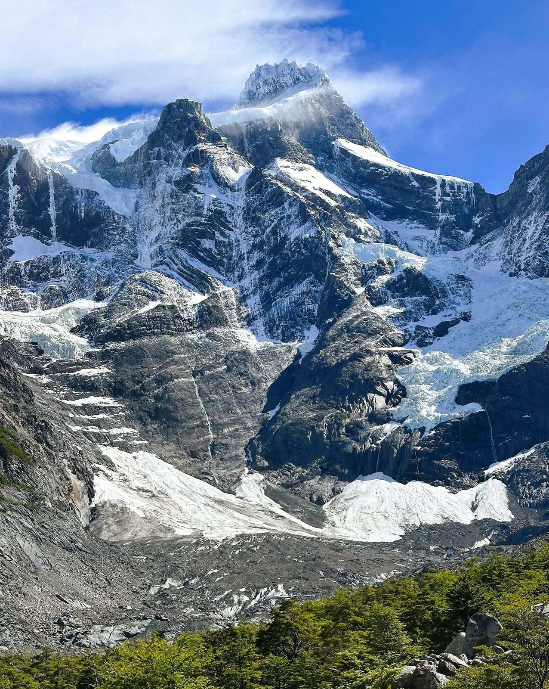
Photo: Caroline Jones · Wikipedia, CC BY 4.0 Paine Grande
Out of the trees the land flattens to the shore of Lago Pehoé, and the massif stands full against the sky. Cerro Paine Grande, at 2,884 metres the highest summit in the range, holds cloud to the north. The catamaran from Pudeto docks here, unloading W-only walkers; for circuit trekkers it is a waypoint, with the Valle del Francés next.
-
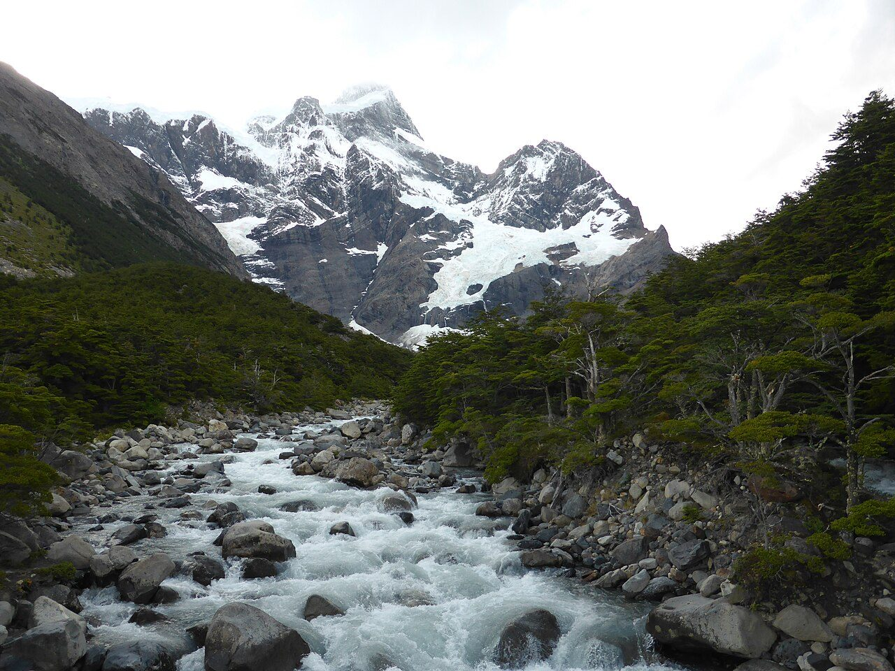
Photo: CARLOS TEIXIDOR CADENAS · Wikimedia Commons, CC BY-SA 4.0 Valle del Francés
A crack like a rifle shot rolls down the valley as snow peels off the east face of Paine Grande in a slow plume. This is the mouth of the Valle del Francés, the middle stroke of the old W. The Río del Francés runs grey with rock-flour beside the climb into lenga, and another avalanche is never far off.
-
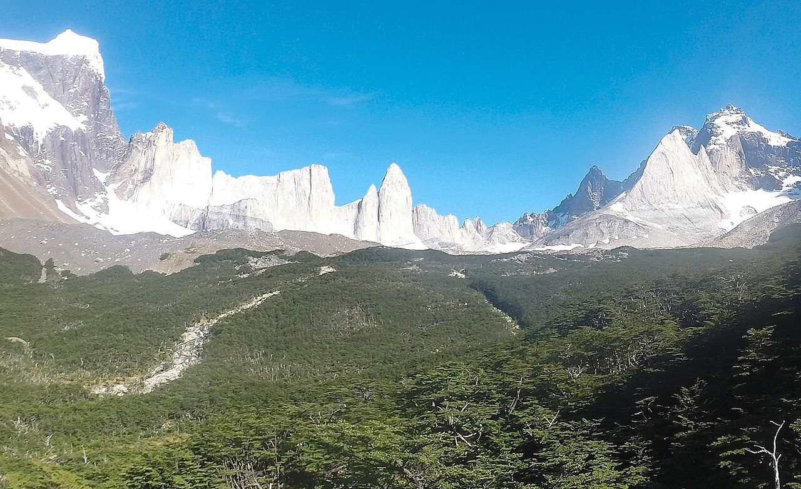
Photo: Carlabedrapo · Wikimedia Commons, CC BY-SA 3.0 Mirador Británico
Higher up, the granite closes into a full ring: Fortaleza, La Espada, the back of the Cuernos, snow smoking off every ridge. Mirador Británico sits inside this amphitheatre of stone, reached by a steep haul over root and moraine, where the air is rarely still. Three hundred and sixty degrees of rock and hanging ice surround the viewpoint.
-
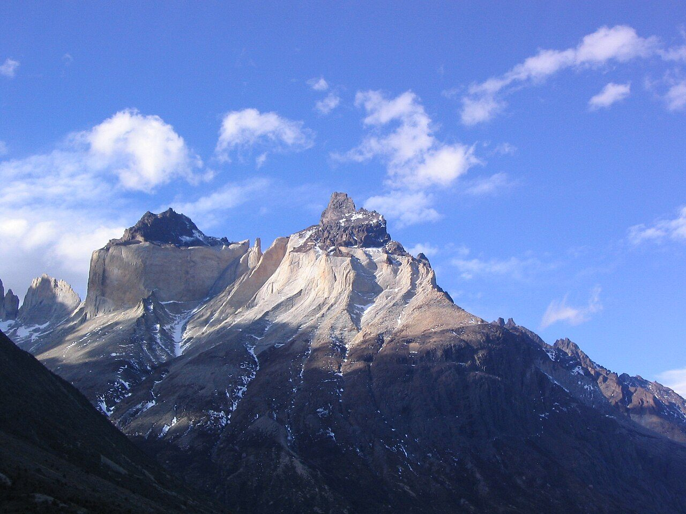
Photo: Phil Whitehouse from London, United Kingdom · Wikimedia Commons, CC BY 2.0 Los Cuernos
Back on the low trail, the Cuernos rear straight off the lakeshore — the Horns, and the reason many first came. Pale granite cores wear a cap of dark, crumbling sedimentary rock, black laid over gold. Some twelve million years ago magma rose beneath that older stone; erosion has since stripped nearly all of it away. Guanacos pick through the scrub below.
-
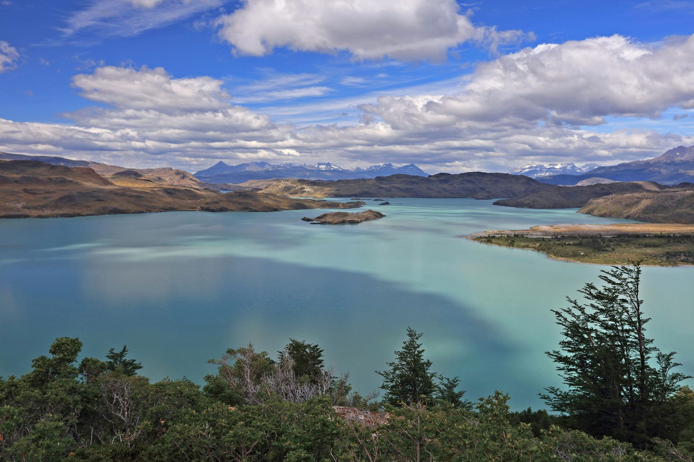
Photo: Martin Cígler · Wikipedia, CC BY-SA 3.0 Lago Nordenskjöld
Turquoise past belief, Lago Nordenskjöld holds the colour of rock-flour suspended in meltwater, named for Otto Nordenskjöld, a Swedish explorer of these southern lands. The path traces its exposed north shore, where wind flattens the grass and drives whitecaps across the surface. Above, the Cuernos shift shape at every bend, while the eastern towers at last begin to show ahead.
-
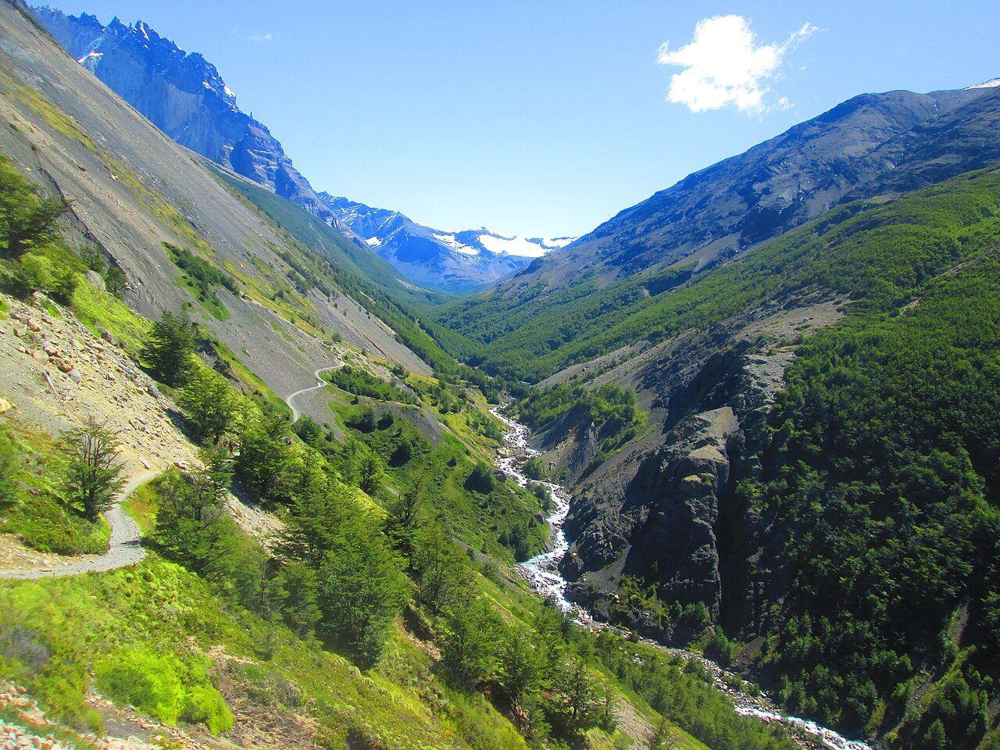
Photo: Manxuc · Wikimedia Commons, CC BY-SA 4.0 Valle Ascencio
The lakeshore ends and the route turns north into the Ascencio valley, the last climb of the circuit. The Río Ascencio tumbles green-grey out of the high mountains ahead. A footbridge, a steepening path, and wind funnelling down the cleft mark the way up. Somewhere above stand the three towers, hidden still but close now.
-
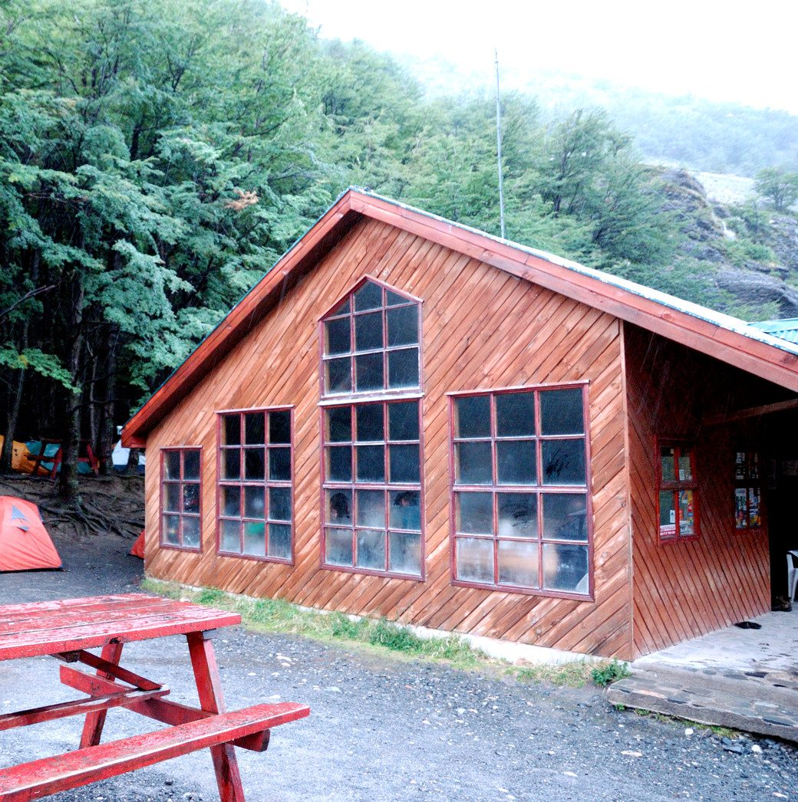
Photo: Ted Wakabayashi · Wikimedia Commons, CC BY-SA 4.0 Refugio Chileno
Sheltered between the valley walls, the wind eases at last. Refugio Chileno stands beside its river, a huddle of timber and woodsmoke, the final lodging before the towers. The morning climb waits above in the dark, and most walkers leave well before four to reach the base at dawn. Cloud tears off the ridge overhead through the night.
-
Campamento Torres
Wind-bent lenga closes over the old Campamento Torres, shut for years now and kept as a ranger post, the last flat ground below the final moraine. Loose stones shift on the slope above in the quiet. Head-torches from Chileno thread through before four in the morning. One hundred and twenty-eight kilometres lead to a single sight, just up the boulders.
-
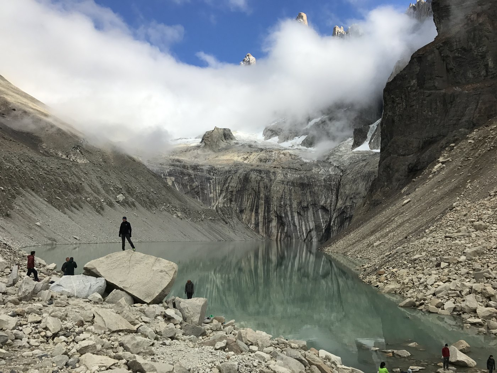
Photo: Wayfool · Wikimedia via Openverse, CC BY-SA 4.0 Base of the Towers
Dawn. The last hour is a scramble up car-sized boulders in the dark, breath ragged, hands cold on the rock. Then the lake opens black below — and above it the three towers catch fire. Torre Sur (2,500 m), Central (2,460 m) and Norte (2,260 m) burn red for a few minutes as the sun clears the rim, mirrored in the still water. A hundred and thirty kilometres end here.
Walking Torres del Paine (O Circuit)
Your watch is already counting these steps. Watch Walks spends them on Torres del Paine (O Circuit), all 130 km of it, and hands you each landmark as you reach it. There's no route recording, no account and no ads. The Inca Trail is free; this one is a one-time purchase with no subscription.
Other trails in South America
- Inca Trail 43 km · Peru
- Inca Road 810 km · Peru
- Alpamayo Circuit 64 km · Peru
- Cordillera Huayhuash Circuit 130 km · Peru